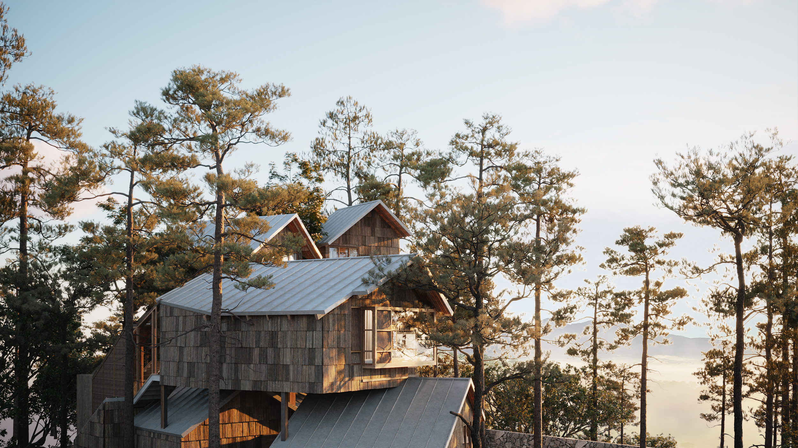
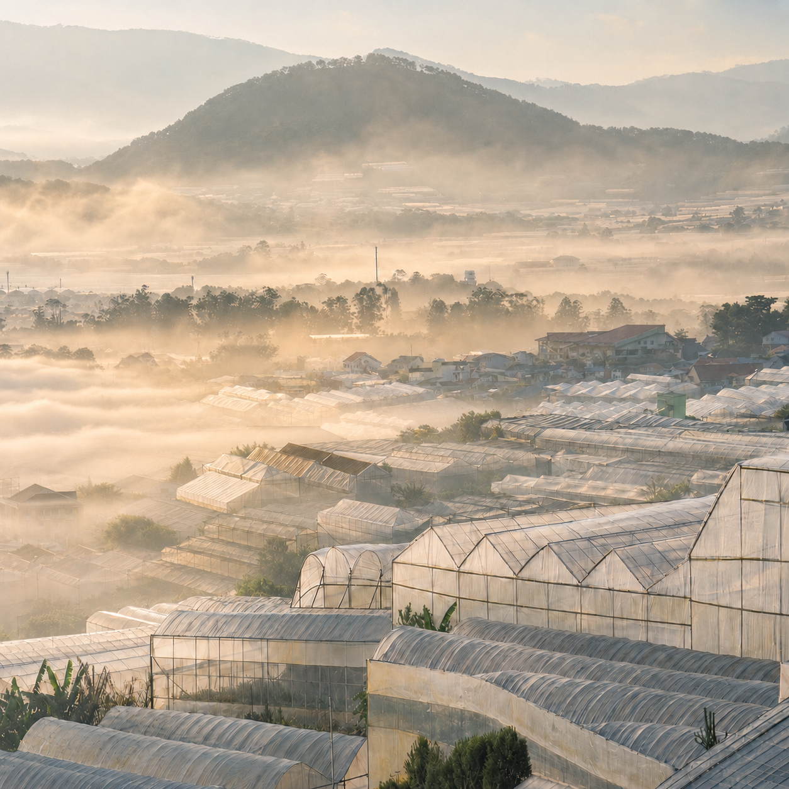
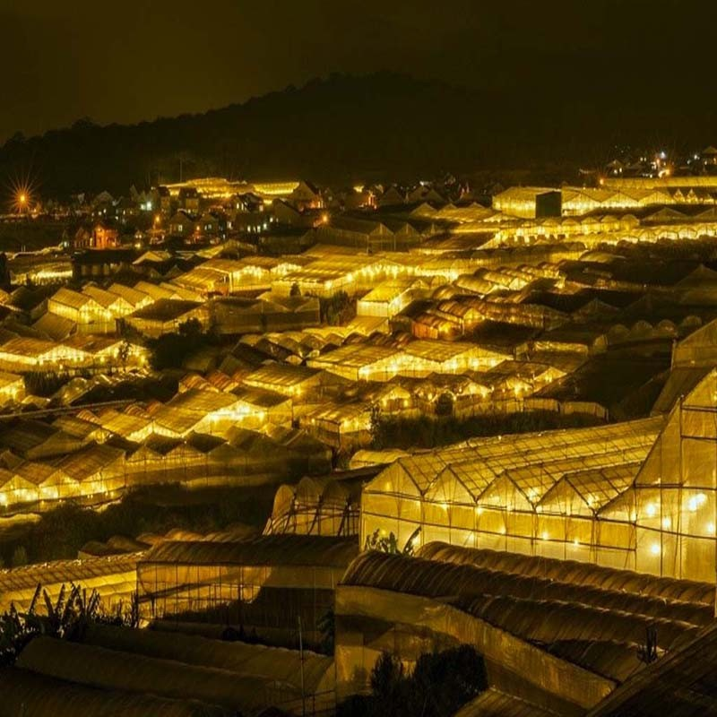
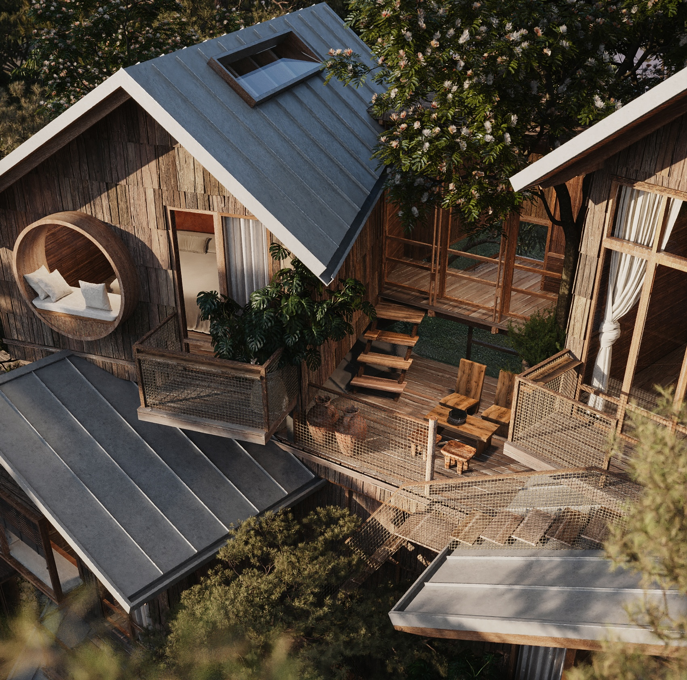
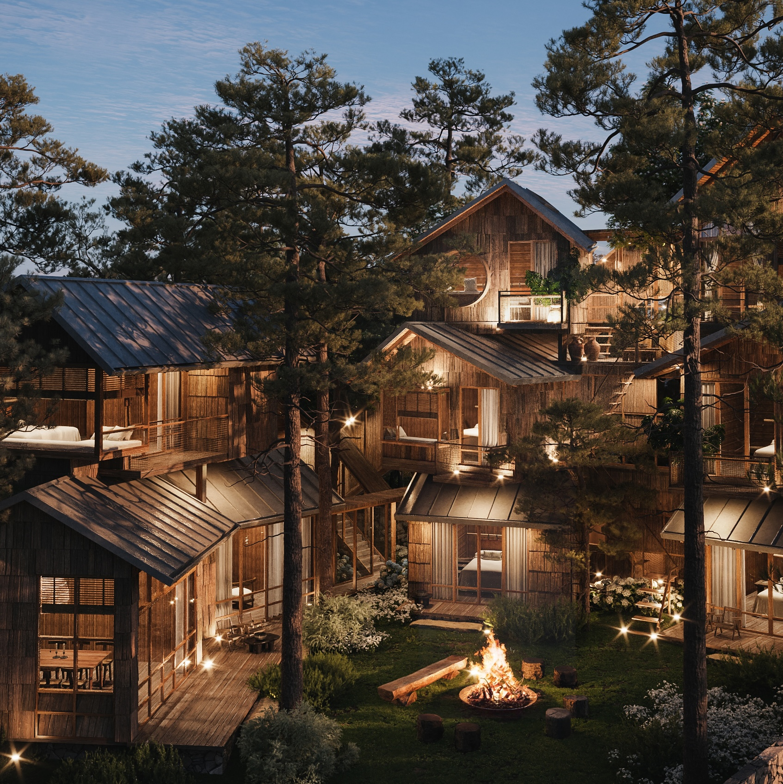

Architecture | 2023
Pine & Oak

Overview
This project proposes a timber facility that reframes demolished and urban trees as valuable material resources. The design combines a showroom, co-working area, workshop, and material processing spaces to make the lifecycle of timber visible to visitors, designers, and clients.
Junior Architect | KA Studio
SketchUp | AutoCAD | Adobe Photoshop | Modelling
Site
Located on a sloping hill in Dalat, a city renowned for its cool climate in a tropical land with native pine forests, the project overlooks the valley with radiation fog at dawn and glow golden glasshouses at night.



rendered photos
Design
Located on a sloping hill in Dalat, a city renowned for its cool climate in a tropical land with native pine forests, the project overlooks the valley with radiation fog at dawn and glow golden glasshouses at night.




Technical drawing
Located on a sloping hill in Dalat, a city renowned for its cool climate in a tropical land with native pine forests, the project overlooks the valley with radiation fog at dawn and glow golden glasshouses at night.